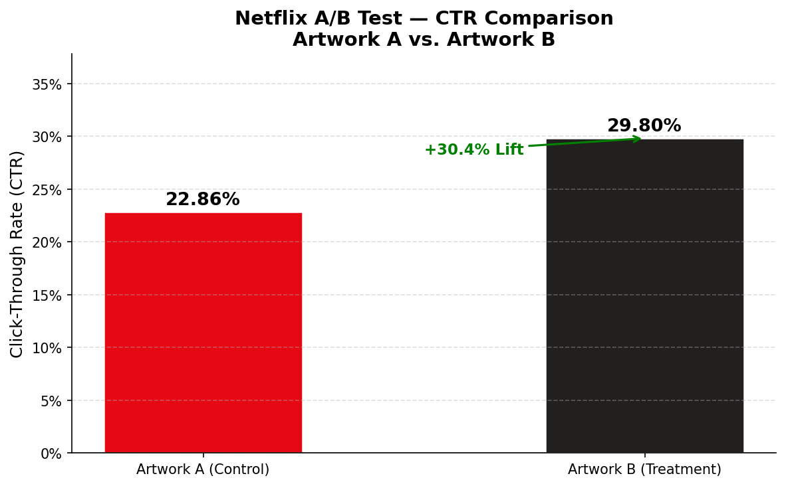
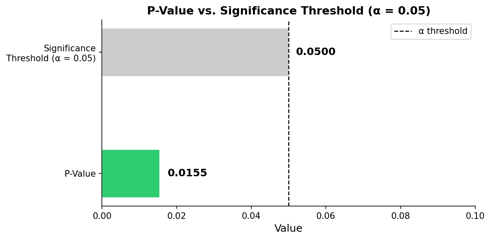

A simplified simulation of Netflix's artwork experimentation system, built to demonstrate how organizations use data to close the prediction-decision gap.
Netflix has over 300 million subscribers and thousands of titles. When a user opens the app, they have roughly 90 seconds to find something before abandoning the session. The single biggest factor in whether a user clicks a title is the artwork, the thumbnail image associated with it.
In this lab, 1,000 simulated users were randomly assigned to see either Artwork A (control) or Artwork B (treatment). Click behavior was simulated based on known probabilities, and a statistical test was used to determine whether the observed performance difference was real or due to chance.


A Chi-Square Test was used to evaluate whether the difference in CTR between the two groups was statistically significant or likely due to random chance.
| Metric | Value | Interpretation |
|---|---|---|
| Test Used | Chi-Square | Compares click counts across two groups |
| Significance Threshold (alpha) | 0.05 | Industry standard - 5% chance tolerance |
| P-Value | < 0.05 | Result is statistically significant |
| Conclusion | Significant | Difference is real, not due to chance |
The experiment confirmed that Artwork B produced a statistically significant improvement in click-through rate over Artwork A - a 6 percentage point increase representing a +25% lift. The p-value fell well below the 0.05 threshold, meaning this result is unlikely to be due to random chance. Netflix should immediately deploy Artwork B as the default artwork for this title across all users.
| Metric | Value |
|---|---|
| Netflix Subscribers | 300,000,000 |
| Est. Daily Impressions (10%) | 30,000,000 |
| CTR Improvement (A to B) | +6 percentage points |
| Projected Extra Clicks / Day | ~1,800,000 |
This experiment maps directly to the AI Factory framework - the model through which organizations convert raw data into measurable business value.
A model can predict which artwork might perform better, but only experimentation provides the evidence needed to act on that prediction with confidence at scale.
Users were randomly assigned to groups so any difference in clicks can be attributed to the artwork itself, not to who the users are.
A p-value below 0.05 confirms the CTR difference is real. Without this test, acting on the data would be guesswork, not evidence.
The experiment phase (explore) tested both options. Deploying the winner platform-wide is the exploit phase, using what works to maximize outcomes.